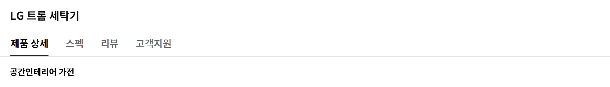

똑똑한 건조생활
세계 최초 인공지능 DD모터
입는 순간 느껴지는
건조의 차이
처음 입었던 뽀송함 그대로 옷감이 살아나는 진짜 건조하세요. 모터와 드럼이 하나로 연결된 인공지능 DD모터는 건조통을 자유자재로 섬세하게 움직여 옷감 손상은 확 줄이고, 옷감 본연의 감촉은 그대로 살려냅니다. 거슬리던 소음도 확연하게 줄어들죠.


인공지능 정밀 센서
한 치의 덜 마름 없는
초고속 건조
어떤 옷이든 넣기만 해도 옷감의 종류와 재질까지 똑똑하게 인식합니다. 섬세함이 다른 정밀 센서가 건조 중간중간 내부 온도와 습도, 옷감의 온도를 실시간으로 체크해 두께가 다른 의류도 균일하게 말려주죠. 건조 시간도 최대 40%나 절약됩니다.
40
영상 or 이미지 01-3
인공지능 스마트 케어
척하면 딱 아는
취향맞춤 케어
평소 어떤 옷을 자주 입는지, 어떤 코스를 자주 쓰는지 트롬이 당신의 습관을 기억해 최적의 코스를 추천합니다. 심지어 외부 날씨도 스스로 인식해 필요한 설정을 알아서 추가해주죠.1
-

- 맑은 날
- 자주 쓰던 건조 습관대로!
- 세탁
- 헹굼 3회
- 탈수 강
-

- 흐린 날
- 건조를 강하게!
- 세탁
- 헹굼 3회
- 탈수 최강


스마트 페어링
정보 공유도 속전속결
건조 천재 트롬답게 기기 간의 정보 공유도 똑소리 납니다. 세탁기의 빨래 정보를 건조기가 그대로 이어받고, 특별 케어가 필요한 의류는 스타일러에 바로 공유되죠.2


영상 or 이미지 01-5
새로운 건조생활
퀵서클 컨트롤
돌리면 끝나는
초간편 건조 생활
이제 심플한 다이얼 하나로 간편하게 건조하세요. 불필요한 요소는 싹 덜고 필요한 기능만 쏙 담아 돌리고 누르면 끝. 선택한 코스도 다이얼 화면에서 쉽고 빠르게 확인할 수 있답니다.
국내 최대 20kg 대용량 건조
세상에 없던 새로운 크기
새로워진 트롬 건조기는 용량부터 클래스가 다릅니다. 국내 최대 20kg 대용량 건조를 국내 최초로 완성했죠. 킹사이즈 이불 두 채 정도는 기본, 일주일 쌓인 빨래도 너끈하게 해결할 수 있습니다.

20
영상 or 이미지 02-2
건강한 건조생활
에어부스터+
옷을 이해하는
똑똑한 바람
상하좌우 전방향에 장착된 546개 에어부스터는 국내 최대 20kg 대용량도 가뿐하게 커버합니다. 새로워진 물결형 리프트가 뭉친 옷감들을 빠르게 퍼트리고, 옷감 무게와 재질에 따라 바람의 세기를 정교하게 조절해 완벽에 가까운 건조 실력을 발휘하죠.
특허받은 100℃ 트루스팀
급이 다른 스팀
격이 다른 살균
살균 케어부터 의류 케어까지 트루스팀 하나면 끝. 99.99%의 압도적 살균 능력은 물론 옷감 깊숙이 밴 냄새까지 산뜻하게 제거합니다. 구겨진 셔츠나 패딩의 볼륨감도 리프레시 코스로 손쉽게 회복시킬 수 있죠.3
통살균 코스
믿고 맡기는 건조기 청결
건조기 내부 청소도 버튼 하나만 누르세요. 깨끗한 물을 끓여 만든 100℃ 고온 스팀이 드럼통 내부와 필터에 남아 있는 먼지, 물때는 물론 바이러스와 세균까지 99.99% 깔끔하게 살균해줍니다.4
편리한 건조생활
조용조용 코스
소리마저 남다르게
저녁 늦은 시간이나 아이가 잠든 방 안에서 사용할 땐 조용조용 코스를 활용해보세요. 거의 느껴지지 않을 정도로 소음을 확 낮춰 시간과 공간 제약 없이 편하게 쓸 수 있어요.

영상 or 이미지 04-1
조용 조용 코스

듀얼 인버터 컴프레서/모터
감탄을 자아내는
수준급 에너지 절약
혁신적인 기술로 탄생한 듀얼 인버터 컴프레서와 모터는 1등급 에너지 효율로 전기료를 파격적으로 줄여줍니다. 여기에 10년 무상보증으로 혹시 모를 상황에도 안심하고 대비할 수 있죠.5
영상 or 이미지 04-2
LG ThinQ 앱
어디서든 무엇이든
바로바로
당신의 일상에 맞춰 당신만의 코스를 만들고, 필요한 알림과 궁금한 내용은 빠르게 알려주는 LG ThinQ로 스마트한 건조 생활을 완성하세요.6

영상 or 이미지 04-3
고지 사항 확인하기
-
1.스마트 케어
- 표준코스에서 가장 최근의 5회 사용 패턴을 분석하여 3회 이상 반복한 옵션을 반영 (구김 방지 및 다림질 알림 옵션 기준)
- LG ThinQ 앱 연동 후 사용 가능
-
2.스마트 페어링
- 스마트 페어링 기능은 Wi-Fi 연결 및 LG ThinQ 앱에 제품 등록 후 사용할 수 있으며, Wi-Fi가 탑재된 LG 세탁기(드럼/통돌이)와 모두 페어링 가능합니다.
- 스마트 페어링 기능 (건조기) 는 일부 모델에 한함.
-
3.트루스팀
- 인터텍(Intertek) 시험 결과, 자사가 제시한 기준으로 셔츠(면 65 %, 폴리 35 % 재질) 1벌, 3벌, 5벌 기준 스팀리프레쉬 코스 동작 시 구김 완화 확인 (AATCC 평가판 기준 초기 구김 대비 평균 2배 이상 완화됨)
- 인터텍 시험 결과, 자사가 제시한 기준으로 스팀옵션 적용, 건조행정시간 / 자연건조시간 비교시 경량 덕다운 기준 패딩 볼륨감 복원력 최대 31 % 더 회복
- 한국의류시험연구원(KATRI) 시험 결과, KS K 0891 (의류관리기 시험 준용), 패딩리프레쉬코스(패딩 1벌), 스팀리프레쉬코스(셔츠 1벌), 침구털기코스(이불 1채), 기능성의류(운동복 2kg), 아웃도어리프레쉬(아웃도어제킷 1벌) 기준 스팀옵션 선택시 표준 직물의 15cm x 15cm 면적에 흡착시킨 냄새 농도를 비교하여 탈취 성능 평균 계산 시 4-에테닐 피리딘(담배) 99%, 이소발레릭 애시드(땀) 99% 제거함.
- 구김 완화, 패딩 볼륨감 복원력 및 탈취 효과는 옷감이나 냄새종류 등 실 사용환경에 따라 차이가 있을 수 있습니다.
- 한국의류시험연구원(KATRI) 시험 결과, 국제 규격 시험 부하 6.4kg 스팀살균코스 기준. 유해세균(황색포도상구균, 녹농균, 폐렴간균) 99.99% 살균. 살균효과는 세균의 종류, 사용환경 등에 따라 차이가 있을 수 있습니다.
- 100 ℃는 스팀 옵션 동작 시, 스팀발생기 내부온도 측정 기준입니다.
- 스팀 기능 선택이 가능한 코스는 표준, 셔츠, 타월, 아기옷, 기능성의류, 침구털기, 패딩리프레쉬, 아웃도어리프레쉬코스이며 스팀살균과 스팀리프레쉬코스는 스팀 기능이 기본으로 설정되는 코스입니다.
- Environmental Allergens INFO & CARE(일본소재) 시험결과, 자사가 제시한 기준으로 국제 규격 시험부하 6.4 kg 스팀살균코스 기준. 꽃가루 알러겐 (돼지풀, 벼과, 노송나무, 자작나무, 삼나무) 99.9% 이상 불활성화.
- 살균효과는 꽃가루의 종류, 사용환경, 실사용 조건 등에 따라 차이가 있을 수 있습니다.
- 인터텍 시험 결과, 스팀살균코스로 집먼지진드기 100% 사멸됨. 제거 효과는 사용 환경에 따라 차이가 있을 수 있습니다.
- 충남대학교 산학협력단 시험 결과, 국제규격부하 6.4kg에 접종한 후 스팀살균코스 행정 시 코로나[MHV] 바이러스 99.99% 제거함.
- MHV바이러스는 코로나 바이러스의 일종으로 신종 코로나바이러스 19(COVID-19)에 대한 시험 결과가 아님.
- 전남대학교 산학협력단 시험 결과, 면부하 1kg에 KS포 (면 100%) 3장에 접종한 후 스팀살균코스 행정 시 인플루엔자 A(H3N2), 인플루엔자 A(H1N1), 엔테로 바이러스(PEV), 헤르페스바이러스 (IBRV), 아데노바이러스(ICHV) 99.99% 제거함.
- 상기 제거율은 실사용 조건에 따라 차이가 있을 수 있습니다.
- 한국의과학연구원(KRIBS) 시험 결과, 국제 규격 시험 부하 6.4kg 스팀살균코스 기준. 유해세균(대장균) 99.99% 살균. 살균효과는 세균의 종류, 사용환경 등에 따라 차이가 있을 수 있습니다.
- 국내최다 : 2020년 11월 국내판매 전기식 건조기 홈페이지 시험치 명시 기준 (자사 16종=유해세균 4종+바이러스 6종+유해물질 6종)
-
4.통살균 코스
- 한국의과학연구원 시험 결과, 자사가 제시한 기준으로 유해세균 4종(황색포도상구균, 녹농균, 폐렴간균, 대장균) 평균 99.9% 살균
- 실험실 측정 기준으로 실사용 환경에서는 달라질 수 있습니다.
-
5.에너지 소비효율
- 건조기 에너지 소비효율 등급 규격기준에 따라 국제규격시험부하(IEC)로 표준코스(+자동모드+표준조건)에서만 시험한 결과임. (건조 코스/모드 및 사용조건에 따라 결과가 상이할 수 있음.)
- 에너지 소비효율 규격에 따른 에너지라벨 표기치 기준, 자사 16kg 기존모델 연간비용 65,000원에서 44,000원 으로 절감.
-
6.LG ThinQ
- 해당 기능 사용을 위해서는 스마트폰의 Google Play 스토어 또는 Apple App 스토어에서 'LG ThinQ' 앱을 설치하여 Wi-Fi에 연결해야 합니다. 자세한 사용 방법은 애플리케이션의 도움말을 참고해 주세요.
- LG ThinQ 앱은 일부 스마트폰에서는 기능 사용에 제약이 발생하거나 작동하지 않을 수 있으니, 최소 사양을 확인 후 사용하세요. (Android OS 5.0 이상, iOS 10.0 이상)
-
※제품 이미지 및 특장점 등에는 이해를 돕기 위해 연출된 이미지가 포함되어 실제 제품과 차이가 있을 수 있으며, 사용환경에 따라 차이가 있을 수 있습니다.